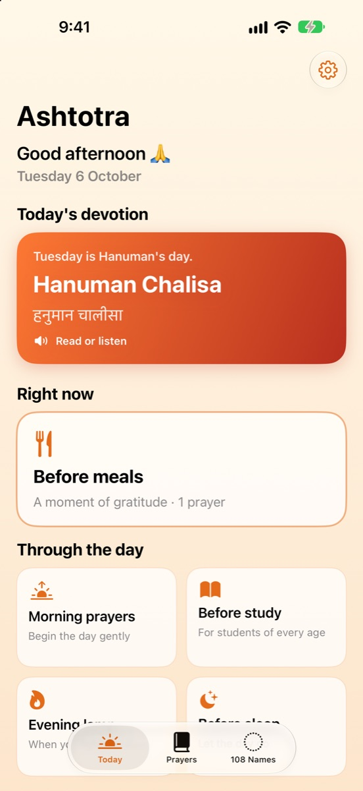
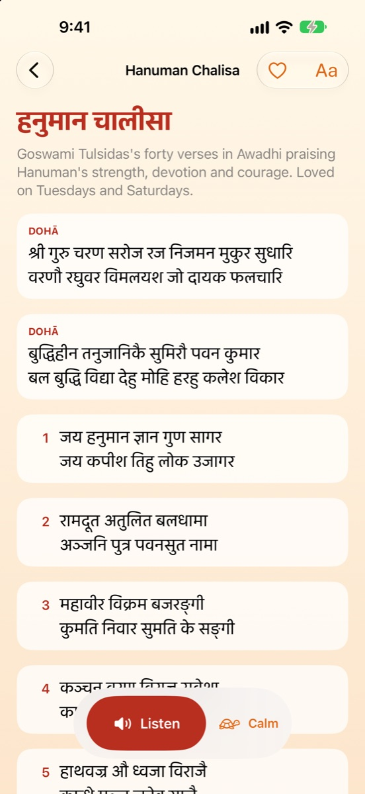
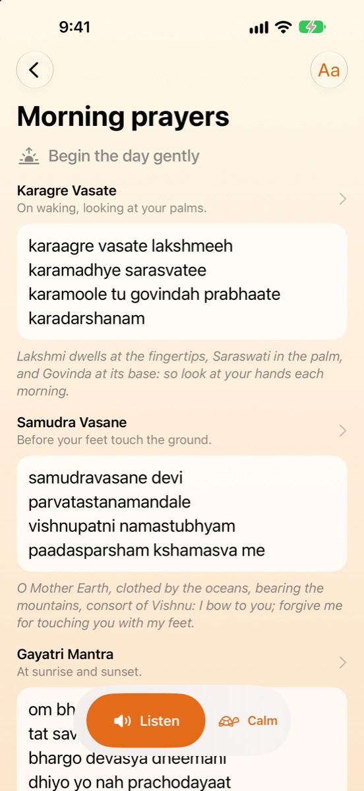
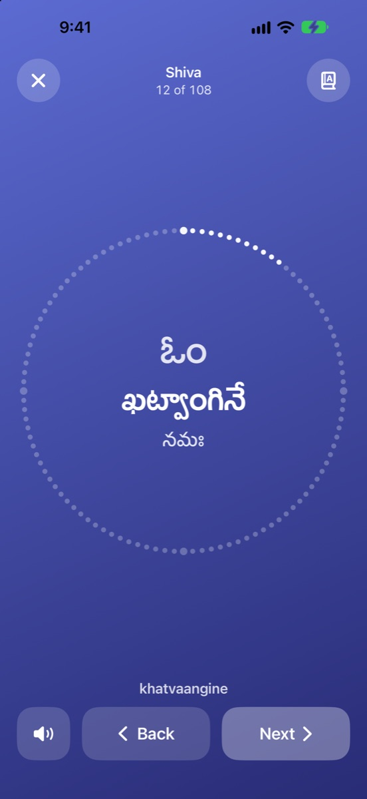
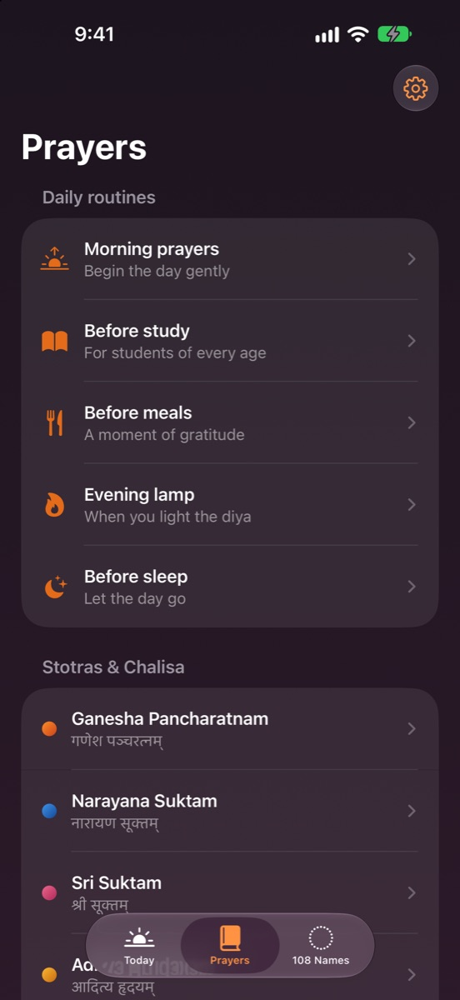
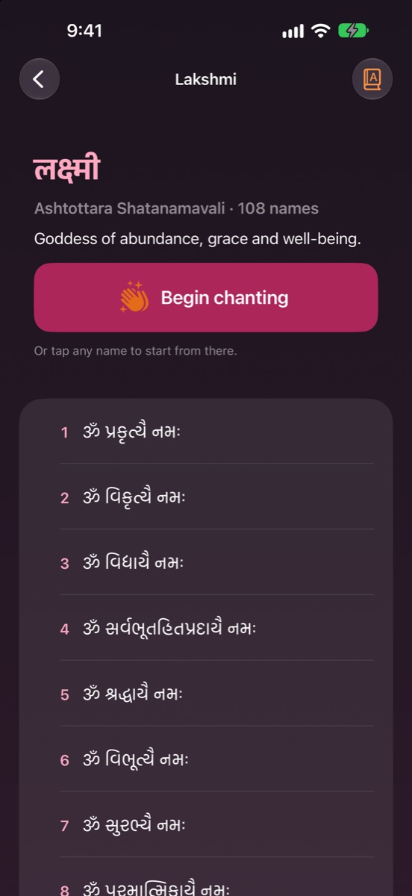
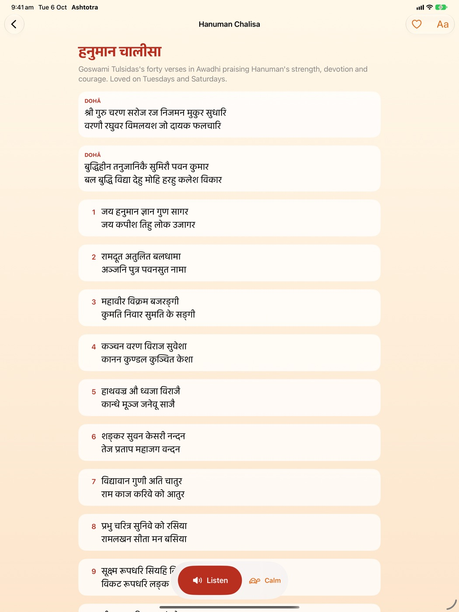

Ashtotra
Daily prayers & 108 names, in your script · iPhone & iPad
A calm companion for daily prayer: morning-to-night routines, the Hanuman Chalisa, Aditya Hrudayam, Sri Suktam and more, the Om Jai Jagadish Hare aarti, and the 108 names of Ganesha, Shiva, Lakshmi and Saraswati. Read in the script you know best, or listen.
EnglishIASTदेवनागरीతెలుగుಕನ್ನಡગુજરાતીStatus: submitted to the App Store (in review).






Features
TodayThe day's traditional devotion and the prayers that suit this moment, from waking to sleep.
ListenEvery prayer read aloud with your iPhone's Hindi voice, words highlighted as you go. Works offline.
Six ways to readEasy English letters, scholarly IAST, Devanagari, Telugu, Kannada and Gujarati.
Chant modeThe 108 names one at a time inside a 108-bead mala, or hands-free with Listen.
Make it yoursFavourites, larger text, sharing, a gentle daily reminder, and it remembers where you stopped.
For every eyeFollows your text size, works with VoiceOver, and looks good in dark mode.
Carefully checkedEvery prayer and list is checked against more than one source.
PrivateNo ads, no accounts, no tracking. Your progress stays on your device.
On iPad

Support
Questions, ideas, or spotted a spelling to correct? Email shruthianthropic@gmail.com. You can also use Settings › Suggest a correction in the app.
Made by Shruthi, an iOS developer in Sydney · Source code